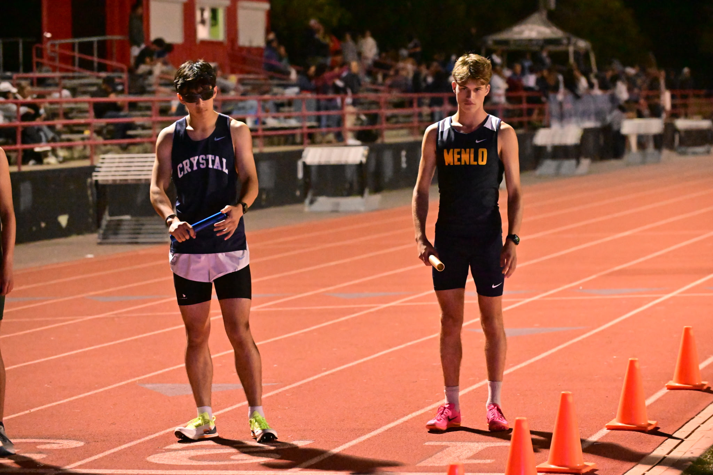
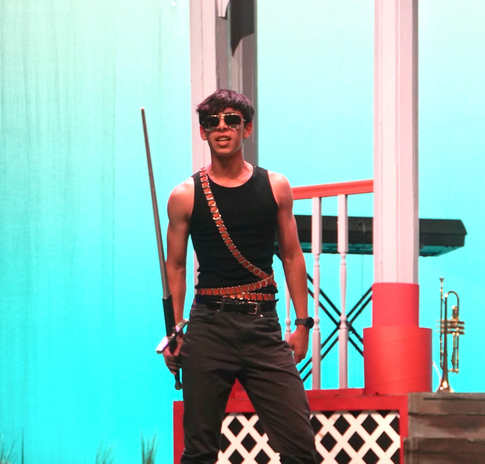
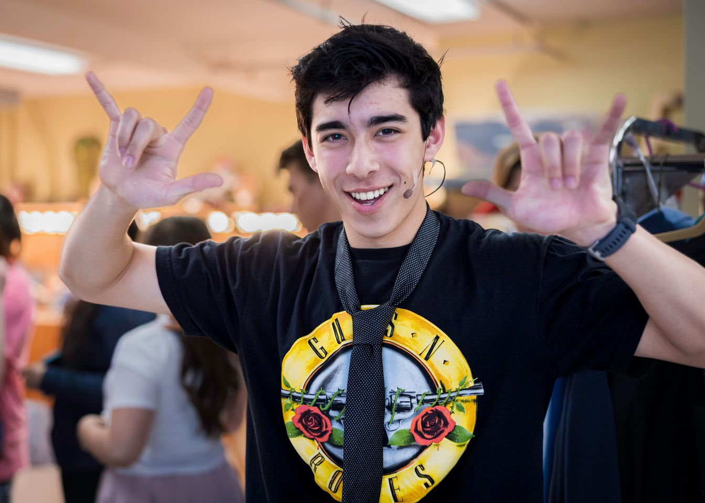

Track and cross country, theater, and a magic show I run for kids with a friend — the parts of my life that don't fit neatly on a résumé.

Team captain for both soccer and track & field at Crystal Springs Uplands. Ran the CIF (CA) 2024 Cross Country State Championship as a top-5 runner on a 3rd-place team, then the 2025 Track & Field State Championship as lead runner in the 4×800 — and set a school record in the 4×400 along the way.

I audition for and perform in two school productions a year. It's the part of school that has nothing to do with being right — just showing up, committing, and figuring it out with a cast in real time.

A children's magic show I co-run with my friend Ethan — I built the show's website (riso/zine style, hot pink and cobalt) and help run the performances themselves.